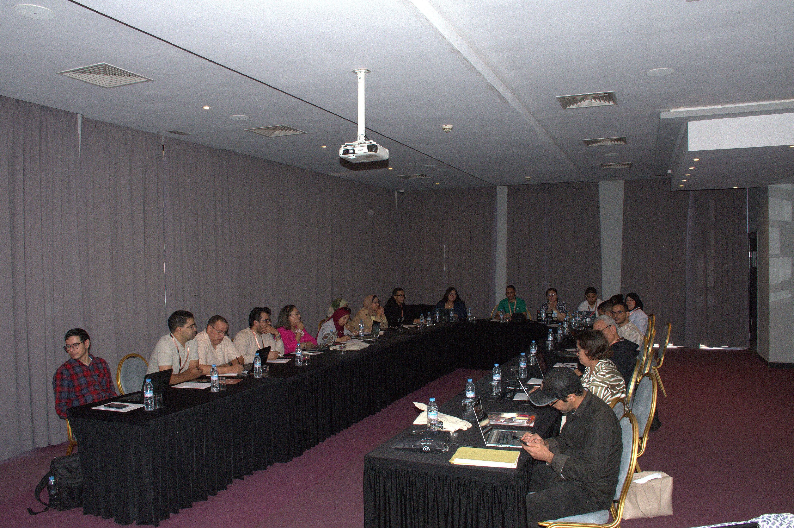
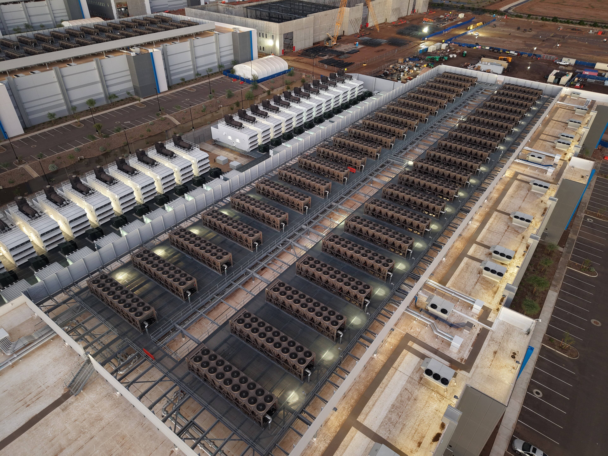

Platform Manager connects the API sources behind Microsoft 365 and the Power Platform, sweeps them on a schedule, and reads deeply when you ask. Administrators get on-the-spot answers about usage, licences, workflows and spend, from data they can trust to be current.
One tenant or many24-hour sweeps, or tighterRead-only by designPhoto: Manhattan skyline, Wikimedia Commons, CC BY-SA 4.0

Agents tuned to your environment and to each Microsoft product (SharePoint, Power Platform, Power BI, Dynamics, Copilot) act on a person's behalf instead of only advising. Every agent is managed in one place, in the Azure AI Foundry hub, so the organisation gets more capability and spends less on language models.
Foundry hubRole-based accessPolicy & governancePhoto: group at a conference-room meeting, WikiCamp Morocco 2026, Wikimedia Commons, CC BY-SA 4.0

See how Microsoft Fabric is laid out in your tenant, then build on it. The Fabric topology map shows what feeds what, and the Fabric builder helps plan and scaffold new workspaces and pipelines, so the estate grows on purpose instead of by accident.
Topology mapFabric builderPlan before you buildPhoto: data-centre roof, Wikimedia Commons, CC0 (public domain)
Contract management built into the platform. See every renewal coming, compare what you pay with what people actually use, and walk into the negotiation with evidence. The system learns your operation, so each new contract is better than the last.
Renewal positionContract analysisVendor leverageEnd users describe what they want and the extended agents build it: automations, SharePoint sites designed to a standard worth showing off, and the applications around them. Broken flow? The repair agent finds the fault and proposes the fix.
Flow builderFlow repairSharePoint site builderPlatform Manager keeps what it learns from every sweep and every question. Explore the working demo, which uses synthetic data only.
Open the live demo